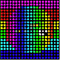

The Pixel Mapper allows the presentation of the video output to a DMX matrix.
DMX data is sent directly from the MA VPU PC via Ethernet using the Art-Net, sACN or MA-Net2 protocol.
The MA VPU uses the library of the grandMA2 console and will automatically copy patch, position, and fixture type into the VPU.
If needed, changes of these values are automatically copied into the VPU as well.
So if the positions are set up in the grandMA2 Stage View, the setup of the Pixel Mapper can be linked to grandMA2 console.
LED Panels are defined similar to dimmer or multi function spots via fixture types in the desk fixture library.
The following example shows a test image mapped on a 20 x 20 LED wall:
|  | ||
| Test image original | Mapping on a 20 x 20 LED Wall |
Enable the Pixel Mapper mode via the menu: Render Pixel Mapper or touch screen Setup Pixel Mapper enabled.
The general output of MA VPU is now done via Ethernet Art-Net, sACN or MA-Net2 instead of the graphic card of the PC.